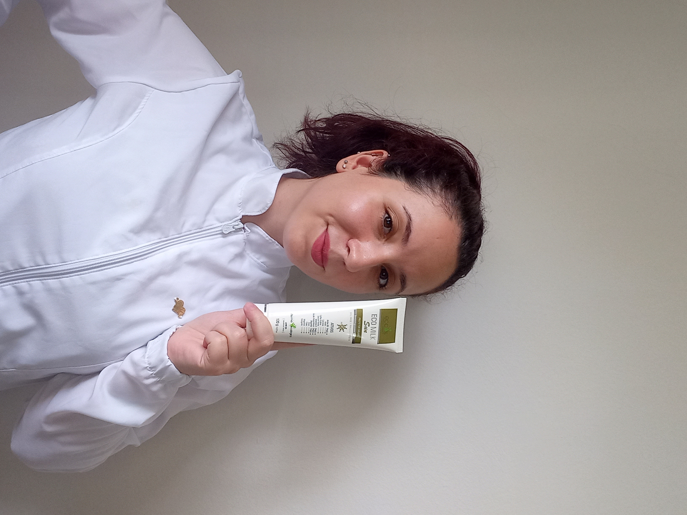

Sou esteticista e body piercer, apaixonada por cuidar da beleza, do bem-estar e da autoestima das pessoas. Acredito que cada atendimento é uma oportunidade de proporcionar mais confiança, leveza e qualidade de vida para quem passa pelo meu espaço.
Sou Bacharela em Estética pela Universidade Anhembi Morumbi e atualmente curso uma pós-graduação na área, buscando constantemente novos conhecimentos para oferecer técnicas modernas, seguras e eficazes.
Meu compromisso é unir conhecimento científico, atendimento humanizado e protocolos personalizados, sempre respeitando as necessidades e os objetivos de cada cliente.
Acredito que cuidar da pele e do corpo vai muito além da aparência. É um momento de pausa, autocuidado e reconexão com a própria essência.
Meu objetivo é proporcionar resultados reais com responsabilidade, acolhimento e ética profissional. Cada protocolo é planejado de forma individualizada, respeitando a história, os desejos e as necessidades de cada pessoa.
Mais do que realizar procedimentos, quero que cada cliente se sinta confortável, segura e acolhida desde o primeiro contato até o final do atendimento.
Além da estética, também atuo como body piercer, realizando perfurações com foco na biossegurança, técnica correta e conforto durante todo o procedimento.
Cada perfuração é feita respeitando a anatomia de cada pessoa, utilizando materiais de qualidade e seguindo rigorosamente os protocolos de higiene.
Meu objetivo é que essa experiência seja tranquila, segura e especial, proporcionando confiança desde o primeiro atendimento.